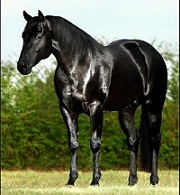

El caballo español parece que se ha encontrado desde tiempos inmemoriales junto a nosotros. Y, en cierto modo ha sido así. No obstante, hubo un momento en el que esta raza tuvo que surgir como tal. Ese origen, a día de hoy, no está determinado de forma muy clara. Aunque sí hay indicios que lo sitúan más o menos en un momento dado.
Los primeros indicios de huellas equinas sobre el suelo español datan de la época prerrománica, citando al famoso Equus Ibérico, pero esta no es la única.
Una de las teorías afirma que el caballo español desciende directamente del caballo Berebere y del Árabe, ambos cruzados con razas autóctonos. En cambio, otros especulan que fueron los caballos libios y númidas los que dieron lugar al caballo español. Por último, hay historiadores que establecen que sus antecesores más exactos fueron los caballos del Tarpán y del caballo Przewalski.
Sin embargo, teorías evolutivas aparte, el que verdaderamente sentó las bases definitivas para la aparición de una raza de caballos española como tal fue el monarca Felipe II, el cual ordenó crear una cabaña de caballos para su reino, en la que todos los ejemplares habían de tener características similares. Fue así como surgió las Caballerizas Reales de Córdoba, en la que tuvieron lugar los mejores sementales y yeguas de por aquel entonces, y que dieron lugar a la Yeguada Real que, poco a poco, dio paso a una auténtica Yeguada Nacional. El caballo español era ya toda una realidad.
Historia de la raza
No se sabe a ciencia cierta el verdadero origen del Caballo Español, sin embargo sí se tienen pruebas de que en la época prerrománica existían referencias ecuestres en lo que hoy se conoce como España.
Autores romanos como Plutarco, Plinio el Viejo y Séneca nos hablan del caballo de Hispania, como un ejemplar bello, dócil, arrogante y valiente, ideal para la guerra y para los juegos que se desarrollaban en los circos de la época.
El Rey Felipe II ordenó la cabaña caballar de su reino y puso las bases definitivas para que el Pura Raza Española alcanzara su apogeo en años venideros. Lo consiguió mediante la creación de las Caballerizas Reales de Córdoba, donde agrupó los mejores sementales y yeguas de las provincias que bordean el Guadalquivir, que por aquel entonces eran las más prolíficas en la cría de caballos.
Así nació la Yeguada Real, que con el tiempo pasó a ser la Yeguada Nacional. Se enviaron entonces multitud de caballos al continente americano, que influyeron decisivamente en su exploración, y éstos fueron el origen y la base de la mayoría de las razas que posteriormente se criaron en América.
Razas como el Lipizzano, Lusitano, Paso Fino o los caballos de sangre caliente centroeuropeos se crearon también a partir del Caballo Español.
En la actualidad, la población mundial de caballos de Pura Raza Española (PRE) registrada por el Libro Genealógico del PRE asciende a 180.000 ejemplares, criados en más de cincuenta países. La Asociación Nacional de Criadores de Caballos de Pura Raza Española (ANCCE) señala que algunas denominaciones como caballo andaluz o ibérico no representan al PRE, sino que habitualmente se trata de caballos cruzados que carecen de los controles de calidad y pureza y de la documentación oficial del Libro Genealógico del PRE. En cambio, los llamados caballos cartujanos son una familia dentro del Pura Raza Española.
La crianza del PRE supone un 10% de la ganadería española, y los ejemplares se venden en gran parte del mundo.
También hay un factor clave: el mercado exterior. El caballo Pura Raza Española (mayoritario en la península, donde se crían también de raza árabe y portuguesa) ha conquistado decenas de países de Centroamérica o Europa. “Nosotros sobrevivimos gracias a estar en la Costa del Sol y junto al aeropuerto. Aquí se establecen muchos alemanes que ejercen de intermediarios. Son los que más compran. También he vendido a Rusia, Bali o México. Y el caballo español engancha”, asegura.
Características del Pura Raza Española
• Cabeza: proporcionada, de longitud media y perfil fronto-nasal de subconvexo a recto; orejas medianas, muy móviles, bien insertadas y paralelas; frente ligeramente y discretamente abombada, ojos vivos, triangulares y de mirada expresiva.
• Cuello: de tamaño y longitud medios, ligeramente arqueado y musculado (en las yeguas en menor medida), bien insertado en la cabeza y tronco y con crin abundante y sedosa.
• Tronco: proporcionado y robusto, con una cruz discretamente ancha y destacada y un dorso consistente y musculado. El lomo deberá ser ancho, corto, musculado, algo arqueado y bien unido al dorso y a la grupa.
• Grupa: de longitud y anchura media, redondeada y ligeramente en declive. Cola de nacimiento bajo y pegada entre isquiones, poblada de abundantes, largas y a menudo onduladas cerdas.
• Miembros anteriores: espalda larga, musculada, oblicua y elástica. Brazo fuerte y de buena inclinación. Antebrazo potente, de longitud media. Rodilla desarrollada y enjuta.
• Miembros posteriores: muslo musculado, nalga ligeramente arqueada y musculada y pierna larga. Corvejón fuerte, amplio y neto.
• Movimientos: ágiles, elevados, extensos, armónicos y cadenciosos. Especial predisposición para la reunión y los giros sobre el tercio posterior.
• Temperamento: el PRE es un caballo equilibrado y resistente, enérgico, noble y dócil, con facilidad para adaptarse a diversos servicios y situaciones. Es un animal de fácil respuesta a las ayudas del jinete y de boca agradable, por lo que resulta obediente y con una gran capacidad de aprendizaje.
En definitiva, se trata de un caballo que destaca por su versatilidad como resultado de la conjunción de su equilibrio psíquico, su armonía de formas, su inteligencia y su voluntad de trabajo.
Antes de comprar:
• Depende de nosotros para ser feliz: es verdad que es imposible saber lo que va a pasar en tanto tiempo, pero un caballo es un animal que, por mucho que vaya a vivir en la cuadra no deja de formar parte de la familia y como tal se le ha de cuidar y respetar.
• Tenerlo conlleva gastos: no solo los de la construcción de la cuadra si no la tuviéramos, sino también las del propio caballo (vacunación, desparasitación, alimentación, etc.). El mantenimiento no es barato y siempre pueden surgir imprevistos. Para hacernos una idea, un saco de 20kg de pienso de buena calidad ya nos sale por 50 euros.
Precio
El precio dependerá de la edad del animal así como de a quién se lo compremos. Por ejemplo, un potro de 2-3 años comprado a un particular puede costarnos entre 1.500 y 2.000 euros; mientras que si ese mismo animal lo adquiriésemos a un profesional nos pediría fácilmente el doble.
Por otra parte, si nos interesa adquirir un caballo medianamente adulto o adulto, un particular nos pedirá unos 15 mil o 20 mil euros, mientras que un profesional entre 25.000 y 35.000 euros.

|

|

|

|

|

|

|

|